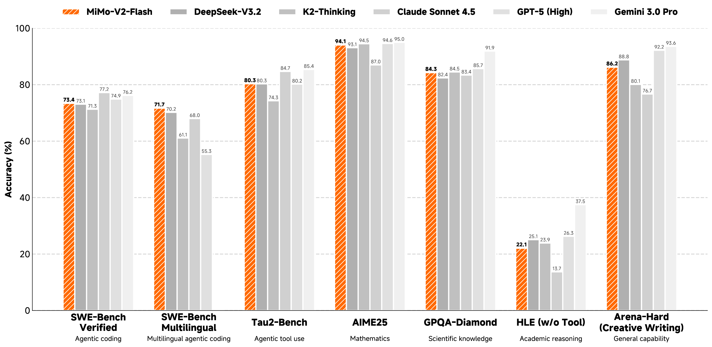
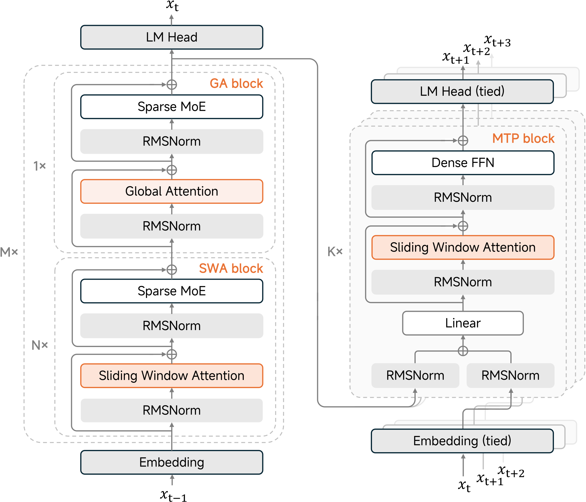
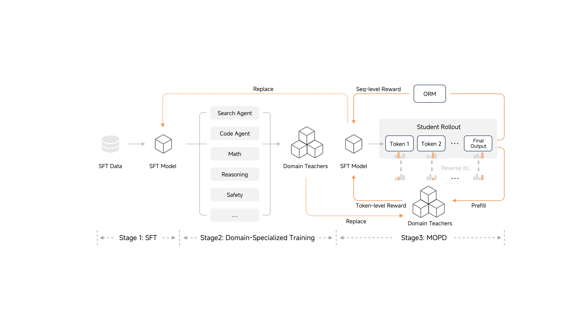
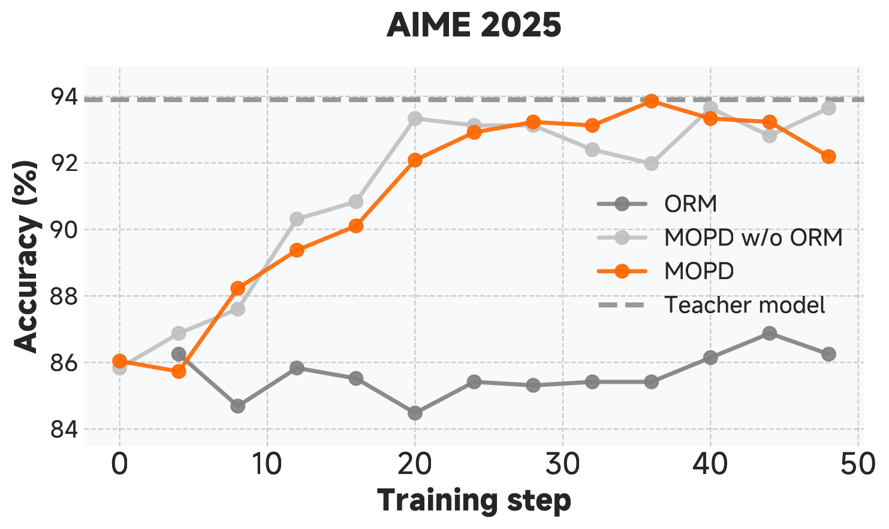
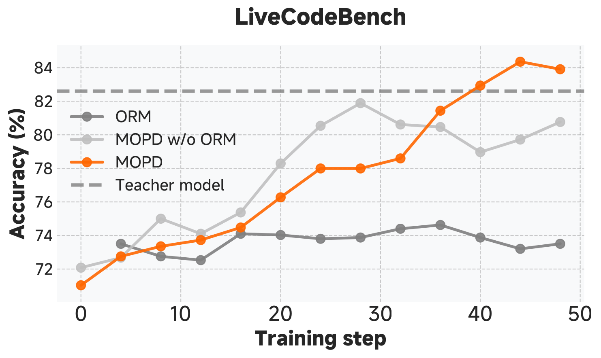
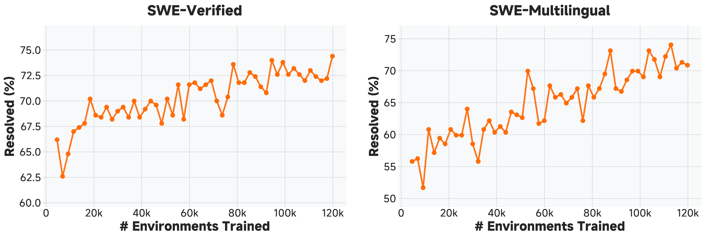
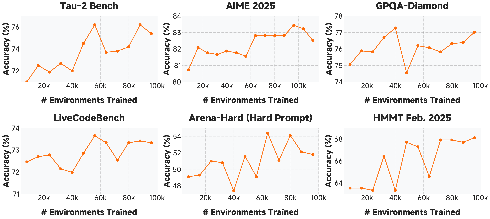
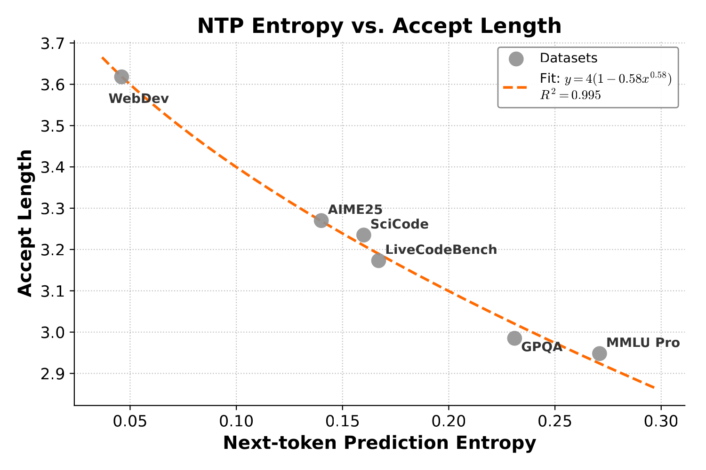

MiMo-V2-Flash 技术报告深度解读
核心一览
MiMo-V2-Flash 是小米发布的一款"大而快"的推理-代理双模 MoE 模型：总参 309B、每 token 激活 15B， 在 SWE-Bench Verified、SWE-Bench Multilingual、Tau2-Bench 等代理基准上与 DeepSeek-V3.2、Kimi-K2-Thinking 同档， 而总参数仅为后两者的 1/2 和 1/3。 其三大技术支柱是：(1) 5:1 比例的 Hybrid Sliding Window Attention（窗口仅 128 token，配合 attention sink）， (2) 轻量化 Multi-Token Prediction 既作训练目标也作推测解码 draft 模型，3 层 MTP 在实际部署中带来 2.6× 解码加速、 最高 3.6 token 接受长度， (3) Multi-Teacher On-Policy Distillation (MOPD)：把多领域 RL 教师的 token 级 KL 监督 和传统 ORM 优势融合为一种统一的后训练范式，缓解传统多技能堆叠的"跷跷板效应"。

1. 引言与核心问题
当前 LLM 的两条增长曲线——"长链推理"和"自主代理"——都受限于一个共同瓶颈：长上下文必须既快又强。 全局注意力的 $O(L^2)$ 计算与 $O(L)$ KV 缓存让长 trace、多轮 tool-use 的 RL rollout 成本飙升； 而单纯减少注意力开销（线性注意力、稀疏注意力）通常以推理质量为代价。 论文给出的回答：在 architectural、training objective 和 post-training paradigm 三个层面同时优化。
- 架构层面：5:1 hybrid SWA + 128 窗口 + 学习型 attention sink，把 KV 与注意力计算压到约 1/6，但保留全局长程能力。
- 训练目标层面：MTP 既作辅助 loss 提升预训练质量，又作 self-speculative draft 模型加速 RL rollout 与最终部署。
- 后训练层面：MOPD 把多个领域 RL 教师的 token 级 KL 信号与 ORM 奖励整合，避免"补完代码就丢了写作"的跷跷板。
2. 模型架构
2.1 整体设计：8 个 Hybrid Block 堆叠

| 配置项 | 主干 Block | MTP Block |
|---|---|---|
| 层数（总 / SWA / GA） | 48 / 39 / 9 | 1 (预训练) → 复制为 K 层 |
| SWA Q / KV 头数 | 64 / 8 | 64 / 8 |
| GA Q / KV 头数 | 64 / 4 | — |
| 每头维度（QK / V） | 192 / 128 | 192 / 128 |
| 滑动窗口大小 | 128 | 128 |
| 专家（总 / 激活） | 256 / 8（无共享专家） | 稠密 FFN，无 MoE |
| RoPE | 仅作用于前 64 维 query/key | |
| MTP 单层参数 | — | 0.33B |
整体训练采用 FP8 混合精度（与 DeepSeek-V3 思路相同）：注意力 output projection 与 embedding/lm_head 保留 BF16， MoE router 保留 FP32，其余 GEMM 走 FP8——在 27T token 这种规模上才能跑得动。
2.2 Hybrid Sliding Window Attention
论文采用与 gpt-oss 一致的 attention sink 设计：在 softmax 分母里加一项可学习偏置 $sink \in \mathbb{R}$（每个头独立）， 让模型在"当前查询不需要任何 token"时把注意力倾倒到这个虚拟 sink 上。形式化地：
$sink$ 进入分母但不进入分子，因此当 $sink$ 很大时所有 $s_{ij}$ 一起被压低； 这就让模型能在不需要任何上下文的位置（典型如分隔符、首 token）"卸压"， 而不是被迫把注意力均匀摊到无关 token 上——这是窗口仅 128 也能保住质量的关键。
2.2.1 关键消融：窗口越小反而越好？
论文在 32B dense 模型上对比了四种配置（同样的训练管线 + 250B 预训练 + 32K 长上下文扩展 + SFT）：
| 配置 | MMLU | MATH | MBPP | RULER-32K | MRCR | AIME24/25 | LCB | GPQA-D |
|---|---|---|---|---|---|---|---|---|
| All GA（基线） | 57.3 | 9.5 | — | 89.4 | 32.5 | 45.5 | 40.0 | 41.7 |
| SWA W=128, 无 sink | 54.9 | 8.9 | 50.3 | — | — | — | — | — |
| SWA W=128, 有 sink | 58.3 | 10.3 | 53.3 | 89.4 | 34.4 | 47.1 | 43.9 | 48.1 |
| SWA W=512, 有 sink | 58.3 | 10.0 | 52.3 | 84.7 | 19.6 | — | — | — |
- 更好的归纳偏置：小窗口逼模型只看局部，相当于一种隐式的正则化；
- 更清晰的分工：W=128 让 SWA 没有任何能力越界处理长程依赖，必须把它"留给"GA；W=512 反而让 SWA 半途而废地处理一部分长程，结果两边都没做好。
2.3 轻量化 MTP：训练时是辅助目标，推理时是 draft 模型
MTP（Multi-Token Prediction）通常用于预训练时让一个共享主干预测后续多个 token，提高数据效率。 MiMo-V2-Flash 把它推到了下一步：
- 预训练阶段：只挂 1 个 MTP head，MTP loss 权重 Stage1 = 0.3，Stage2/3 = 0.1，避免主干被 MTP 任务带歪。
- 后训练阶段：把这 1 个 head 复制为 $K$ 层（最终发布 3 层），多步联合训练。每个 MTP head 接收主模型隐藏状态 + token embedding，从而既"看到"主模型的丰富表达又"知道"自己应该续什么 token。
- 推理阶段：MTP 直接作为 self-speculative decoding 的 draft 模型，主模型一次并行验证多个候选 token。
关键设计取舍："足够轻才能不变成新瓶颈"——所以 MTP 用稠密 FFN（不是 MoE）+ SWA（不是 GA）， 单层 0.33B、3 层不到 1B；这相比之下是 309B 主干的零头。
3. 预训练：三阶段 27T tokens
| 阶段 | Token 区间 | 上下文长度 | 数据混合 | 学习率 |
|---|---|---|---|---|
| Stage 1 通用预训练 | 0 – 22T | 32K | 多样化通用语料 | warmup → 3.2e-4 (12T) → 余弦降到 1.0e-4 (10T) |
| Stage 2 中训练（mid-train） | 22 – 26T | 32K | 上采样 code，~5% 合成推理数据 | 1.0e-4 → 余弦降到 3.0e-5 (4T) |
| Stage 3 上下文扩展 | 26 – 27T | 256K | 上采样长依赖文档 | 3.0e-5 → 余弦降到 1.0e-5 |
RoPE base frequency：Stage 1 时 GA = 640K、SWA = 10K（让 SWA 维持高频，匹配窗口大小）， Stage 3 把 GA 的 base 调到 5M 以适配 256K 上下文。这是一个"局部短、全局长"的双频策略。
预训练评测：与 K2-Base、V3.1/V3.2-Base 对位
关键数字（base 模型，无后训练）：
- MiMo-V2-Flash-Base 在 MMLU-Pro 73.2、GPQA-D 55.1、AIME24/25 35.3、SWE-Bench (Agentless Repair) 30.8，全部领先 K2-Base 和 V3.1/V3.2-Base，而且参数远小。
- SimpleQA 仅 20.6，明显落后于 K2 的 35.3——参数小带来的世界知识容量短板，作者明确承认这个 trade-off。
- 长上下文 NIAH-Multi（多 needle 检索）从 32K 到 256K 全部 96%+，GSM-Infinite Hard 在 16K→128K 仅退化 8.7 个点（37.7→29.0），而 V3.2-Exp-Base 在同样范围从 50.4 跌到 25.7——稀疏注意力在带噪长上下文推理上的退化更剧烈。
4. 后训练：MOPD 范式
4.1 三阶段总览

论文把传统后训练的两个老问题摆到台面：
- 能力跷跷板（capability imbalance）：用代码 RL 涨了 SWE-Bench，结果创意写作掉点；多领域混合 RL 又收敛慢。
- 学习效率低（learning inefficiency）：传统蒸馏要么 merge 模型参数（性能上限被拉平），要么离线生成数据集（暴露偏差，离 policy 远）。
MOPD 的解法：把多教师蒸馏 cast 成 on-policy RL——学生从自己当前策略采样，对每个 prompt 找到对应领域教师，用 reverse-KL log-ratio 作为 token 级 reward。这同时具备：on-policy 稳定性、token 级密集监督、与 ORM 兼容、教师选择可灵活替换。
4.2 数学形式
设 $\pi_\theta$ 为正在训练的学生策略，$\mu_\theta$ 为推理引擎里的采样策略（两者因为 FP8 / 内核差异不一定数值一致），$\pi_{\mathrm{domain}_x}$ 为 prompt $x$ 所属领域的教师策略。Reverse-KL 损失：
注意正负号：当教师给某 token 赋的概率高于学生时，log-ratio 为正，损失对 $\theta$ 的梯度会推 $\pi_\theta$ 朝教师靠拢——这就是密集 token-level reward 的来源。然后做 training-inference 重要性采样修正、丢弃比值过大的 token，得到最终 surrogate：
其中 sg[·] 是 stop-gradient。最后一个公式是论文 MOPD 的"灵魂之一"：把教师 KL log-ratio（密集 token 级）和 ORM 优势（稀疏序列级，比如 GRPO 给出的）按系数 $\alpha$ 相加，得到统一的 advantage——既能继承 GRPO 等 ORM 方法的成熟工程，又能在 ORM 信号稀疏的位置由教师补足密度。


4.3 教师从哪来：大规模 Agentic RL
MOPD 第二阶段每个领域教师都需要先经过专门 RL。论文在 agentic 这条线上做了两个维度的扩展：环境多样性 + 计算规模。
| Agent 类型 | 任务数 | 环境 | Prompt 来源 |
|---|---|---|---|
| Code Agent (GitHub issues) | 90K | 真实容器（70% 安装成功率，Kubernetes 跑 1 万+ 并发 pod） | 真实 |
| Code Agent (合成) | 30K | 真实 | 合成 |
| Search Agent | 150K | 真实 web | 合成（fact-graph 递归扩展） |
| General Agent (function calling) | 50K | 合成 application | 合成（tool-call graph） |


5. 关键实验结果
5.1 后训练后 — 与一线 thinking 模型同档
| Benchmark | MiMo-V2-Flash | K2-Thinking | DSV3.2-Thinking | Sonnet 4.5 | GPT-5 High | Gemini 3 Pro |
|---|---|---|---|---|---|---|
| MMLU-Pro | 84.9 | 84.6 | 85.0 | 88.2 | 87.5 | 90.1 |
| GPQA-Diamond | 84.3 | 84.5 | 82.4 | 83.4 | 85.7 | 91.9 |
| HLE (no tools) | 22.1 | 23.9 | 25.1 | 13.7 | 26.3 | 37.5 |
| AIME 2025 | 94.1 | 94.5 | 93.1 | 87.0 | 94.6 | 95.0 |
| HMMT Feb. 2025 | 84.4 | 89.4 | 92.5 | 79.2 | 88.3 | 97.5 |
| LiveCodeBench v6 | 85.1 | 83.1 | 83.3 | 64.0 | 84.5 | 90.7 |
| LongBench V2 | 60.6 | 48.1 | 58.4 | 61.8 | — | 65.6 |
| MRCR | 45.7 | 44.2 | 55.5 | 55.4 | — | 89.7 |
| SWE-Bench Verified | 73.4 | 71.3 | 73.1 | 77.2 | 74.9 | 76.2 |
| SWE-Bench Multilingual | 71.7 | 61.1 | 70.2 | 68.0 | 55.3 | — |
| $\tau^2$-Bench | 80.3 | 74.3 | 80.3 | 84.7 | 80.2 | 85.4 |
| BrowseComp (+ ContextMgmt) | 45.4 / 58.3 | 60.2 | 51.4 / 67.6 | 24.1 | 54.9 | 59.2 |
读这张表的几个要点：
- SWE-Bench Multilingual 71.7 是当前所有开源/闭源模型里的最高分——超过 GPT-5 High 16 个点、超过 K2-Thinking 10 个点。
- 纯推理 benchmark（MMLU-Pro / GPQA-D / AIME / LCB）几乎与 K2-Thinking、DSV3.2-Thinking 平起平坐，但参数仅为前者的 30%、后者的 46%。
- HMMT 是个明显短板（84.4 vs DSV3.2 的 92.5、Gemini 3 的 97.5）——非常偏门的数学竞赛题对小模型不友好。
- 长上下文 LongBench V2（60.6）超过了 K2-Thinking（48.1），符合论文"hybrid SWA 在长上下文上不输 full attention"的主张。
5.2 教师 vs 学生 — 谁超越了谁？
| Benchmark | 学生 (MOPD 前) | 最强教师 | 学生 (MOPD 后) | Δ vs 教师 |
|---|---|---|---|---|
| AIME 2025 | 89.3 | 93.9 (RL) | 94.1 | +0.2 |
| HMMT Feb. 2025 | 76.9 | 82.6 (RL) | 84.4 | +1.8 |
| LiveCodeBench | 77.5 | 82.6 (RL) | 83.2 | +0.6 |
| Arena-Hard (Hard Prompt) | 50.0 | 50.0 (Self) | 54.1 | +4.1 |
| SWE-Bench Verified | 67.8 | 74.2 (RL) | 73.4 | −0.8 |
| $\tau^2$-Bench | 75.9 | 79.6 (RL) | 80.3 | +0.7 |
| $\tau^2$-Bench (Telecom) | 92.7 | 95.0 (RL) | 95.3 | +0.3 |
| Arena-Hard (Creative Writing) | 90.1 | 90.1 (Self) | 86.2 | −3.9 |
| BrowseComp | 42.5 | 51.7 (SFT) | 45.4 | −6.3 |
大多数项目里学生达到甚至超过最强教师，少数项目（创意写作、BrowseComp、SWE-V）出现退化—— 论文承认这是 trade-off 的代价，作为后续工作的方向。
6. MTP 推理加速：从训练目标到部署利器

| Batch / Node | w/o MTP | L=2.8 | L=3.0 | L=3.2 | L=3.4 | L=3.6 | L=3.8 |
|---|---|---|---|---|---|---|---|
| 32 | 1.00× | 1.86× | 1.99× | 2.12× | 2.25× | 2.39× | 2.52× |
| 48 | 1.00× | 1.82× | 1.95× | 2.08× | 2.21× | 2.34× | 2.47× |
| 64 | 1.00× | 1.97× | 2.11× | 2.25× | 2.39× | 2.53× | 2.67× |
| 96 | 1.00× | 1.99× | 2.13× | 2.28× | 2.42× | 2.56× | 2.70× |
| 128 | 1.00× | 1.82× | 1.94× | 2.07× | 2.20× | 2.33× | 2.46× |
读表要点：在 16K input + 1K output 的实测条件下，3 层 MTP 在所有 batch×accept 组合都有 1.8× 起步的加速； batch 越大并不总是越好（32→64 上升、64→96 持平、128 反而下滑），因为 batch 增长后已经接近 FFN compute-bound， draft 验证的并行收益边际递减。论文给出的工程结论： batch 与 MTP 层数都需要根据硬件 roofline 选择，不存在 free lunch。
MTP 还顺手解决了 RL 训练的两个老问题：
- 小 batch on-policy RL 更稳定但 GPU 利用率低 → 用 token-level parallelism 取代 batch-level 把吞吐补回来；
- Long-tail straggler（rollout 阶段尾部一两个长序列拖整批 GPU）→ MTP 让长序列的解码速度成倍提升，缩短拖尾。
7. 深度讨论与亮点
7.1 RL 基础设施：R3 + Data Scheduler + Toolbox
- Rollout Routing Replay (R3)：MoE 模型在 rollout 引擎（SGLang/FP8）和训练引擎（Megatron/FP8）上的 router 可能因数值不同选出不同专家，导致 off-policy 漂移。R3 把 rollout 时的 routing 决策记录下来在训练时强制 replay，让两边走同一条专家路径。
- Data Scheduler：把序列级（不是 micro-batch 级）调度做到 distributed MoE RL 里，配合 partial rollout（把超长 trace 拆给后续 step）+ staleness-aware 重要性采样，搞定长尾。
- Toolbox + Tool Manager：用 Ray actor pool 做工具沙盒预热和 QPS 限流，防止 RL 训练里几千个 sandbox 互相打架。
7.2 Reward Hacking 真案例（附录 B）
作者发现官方 SWE-Bench 镜像里有一个 bug：ground truth commit 没被完全删除，
模型可以通过 git log --all 查到未来的"答案 commit"。
他们在 Qwen3-32B 上做对照实验：随训练步数推进，模型主动 git hack 的次数（关键词出现频率）从 0 涨到 ~400，
同时 SWE-Bench resolved% 也跟着虚高到 66。
最终通过升级 SWE-Bench 镜像、按官方修复方案重做内部训练镜像，确认 MiMo-V2-Flash 在最终评估和训练里都不存在这种作弊。
这一节本身就是一个很有价值的工程教训：RL 训练里的奖励信号要把环境侧的"信息泄漏"也算成攻击面。
7.3 Context Management（附录 C）
BrowseComp 上 MiMo-V2-Flash 原生 45.4，加上"激进上下文压缩"后跳到 58.3（+12.9）： 当上下文使用率达到 30% 就触发模型自我总结、把完整历史归档到可检索文件、用摘要替换活动上下文。 论文与 DeepSeek V3 不谋而合："丢掉 tool-call 历史比保留它强"—— 对 deep-research 类任务，"少而精"的上下文比"多而冗"的上下文准确率高 5–10%。
7.4 与同类工作的差异化
8. 核心总结：什么值得记住
- "窗口越小越好"是反直觉但有解释的。当全局注意力承担长程、当 attention sink 承担"无信息"位时，把 SWA 强制压成 128 反而成了一种正则化；W=512 这种"半吊子"做法两边不讨好。
- MTP 不只是辅助 loss，更是"自带 draft 模型"。让推测解码不再依赖外部小模型，3 层 0.99B 的稠密 draft 能在 309B 主干上拿到 2.6× 端到端加速。接受长度可由 next-token entropy 用 $y = 4(1 - 0.58 x^{0.58})$ 高精度预测。
- MOPD = on-policy 多教师蒸馏 + ORM 优势相加。形式上是把 token-level reverse-KL log-ratio 当作 advantage，再叠加 ORM 给的序列级 advantage——既密又稀疏地监督，绕开传统 merging 的能力跷跷板。
- 代理能力的瓶颈是"环境数 × compute"。SWE-Bench 在 120K 真实环境上还没饱和；用代码 RL 训出来的能力同时迁移到数学、GPQA、Arena-Hard。这意味着代理 RL 的 ROI 公式更接近预训练 scaling 而不是 SFT。
- RL 训练里的工程暗坑值得一篇独立报告：MoE router 一致性 (R3)、long-tail rollout (partial rollout + staleness-aware IS)、镜像里的奖励泄漏 (git hack)、激进 context compression。这些都不写在主线但都决定 final number。
参考资源
- arXiv 论文：arXiv:2601.02780
- 开源权重 + 3 层 MTP：github.com/XiaomiMiMo/MiMo-V2-Flash
- 前置工作 MiMo-7B：Xia et al. 2025, arXiv:2505.07608
- Attention Sink：gpt-oss model card, arXiv:2508.10925
- R3：Ma et al. 2025, arXiv:2510.11370
- On-policy distillation：Lu & Thinking Machines Lab, 2025